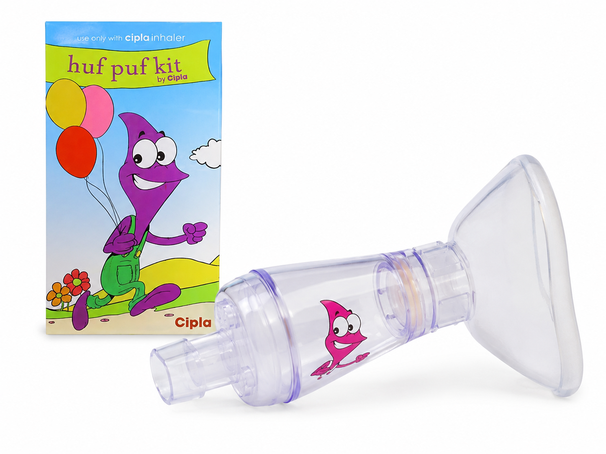
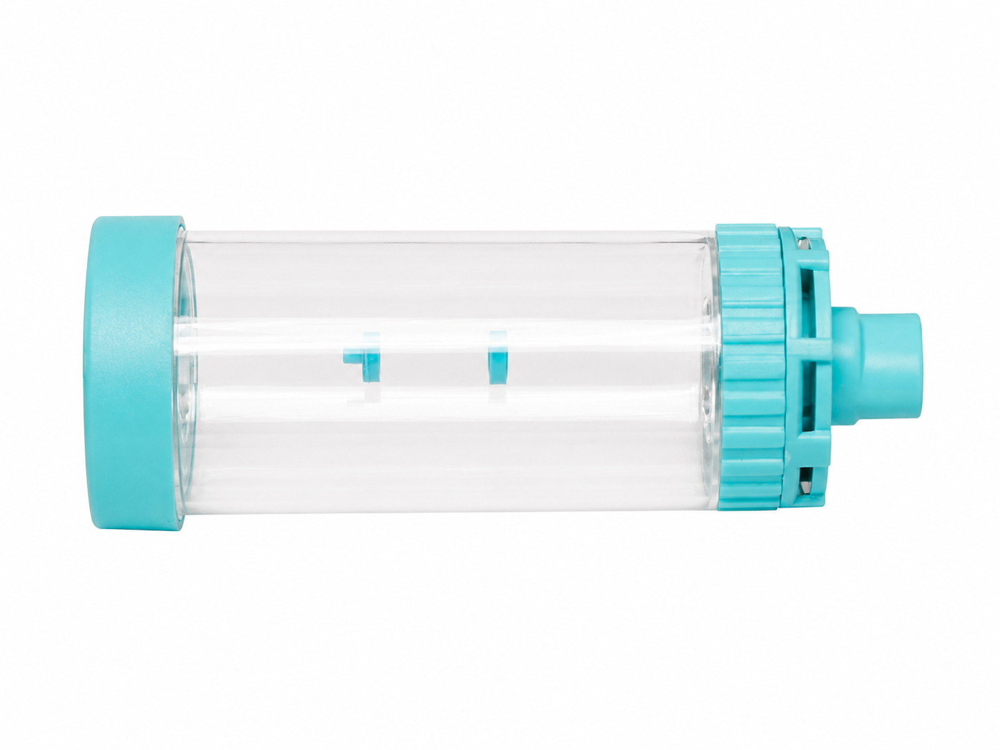

Dr. Murali Gopal
Senior Paediatrician & Paediatric Pulmonologist
MCR: 57489
MBBS, DCH(UK), MRCPCH(UK), FRCPCH(UK), CCT Paediatrics (UK),
Fellow in Paediatric Pulmonology (Aus), Allergology (Ind)
Last reviewed: 2 July 2026
What is asthma?
Asthma is a long-term tendency for the airways in the lungs to become sensitive, swollen, and narrow. Children may have cough, wheeze, chest tightness, or breathing difficulty, often triggered by viral infections, exercise, smoke, dust, pollution, weather changes, or allergies.
Asthma severity and triggers vary from child to child, so treatment should be reviewed and adjusted by the child’s paediatrician.
Common symptoms and warning signs
- Cough, wheeze, noisy breathing, chest tightness, or breathlessness.
- Cough or breathing symptoms at night, during play, or after exercise.
- Needing reliever medicine more often than usual, or more often than the written asthma action plan allows.
- Fast breathing, chest indrawing, difficulty speaking, blue lips, exhaustion, or drowsiness are emergency warning signs.
Use inhalers with a spacer
A spacer helps more medicine reach the lungs and makes inhaler use easier for children. Technique matters, so ask your doctor, nurse, or asthma educator to watch your child use the device and correct any steps.
Choosing the spacer setup

Spacer with mask
Example: Zerostat Huf Puf Kit
For children below 5 years, a spacer with mask is generally used because many younger children cannot reliably seal their lips around a mouthpiece.

Spacer with mouthpiece
Example: Transpacer
For children 5 years and above, a spacer with mouthpiece or spacer alone may be used if the child can seal the lips and use it correctly. If an older child cannot use the mouthpiece correctly, a mask may still be needed.
The device images and brand names shown are used only as familiar educational examples for parents. They do not represent endorsement, sponsorship, or preference for any specific brand.
Use an Asthma Management Plan
The plan should explain the child’s usual medicines, when and how to use reliever medicine, how to recognise worsening symptoms, emergency red flags, and when follow-up is needed. Parents should follow this written plan and seek medical advice if they are unsure, rather than changing medicine dose or frequency on their own.
Avoid routine home nebulizer use
- Wrong medicine or wrong dose can be used at home.
- Repeated nebulizer use may delay urgent care when a child is worsening.
- Poor cleaning can increase contamination risk.
- The belief that a nebulizer is always stronger can give false reassurance.
Avoid bronchodilator syrups
Possible side effects include tremor, fast heartbeat, irritability, and sleep disturbance. Use asthma medicines only as prescribed for your child.
Red Flags / When to Seek Help
- Fast or hard breathing, chest indrawing, nostril flaring, or difficulty speaking.
- Blue lips, severe breathlessness, exhaustion, confusion, or drowsiness.
- Reliever medicine is not helping as expected or symptoms return quickly.
- Your child is worsening, you are worried, or the clinician-provided asthma plan says to seek urgent care.
Medical disclaimer
References
- Global Initiative for Asthma. Global Strategy for Asthma Management and Prevention, 2026.
- NICE. Asthma: diagnosis, monitoring and chronic asthma management (BTS, NICE, SIGN), NG245. Published November 2024, with later updates.
- Royal Children’s Hospital Melbourne. Kids Health Info: Asthma resources.
- Royal Children’s Hospital Melbourne. Kids Health Info: Asthma spacers and asthma action plan resources.
Last reviewed: 2 July 2026.
© Dr. Murali Gopal | For Patient Education Only This educational material is intended for parent and patient education. Reproduction, redistribution, or modification without permission is not allowed.